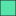
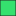
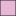
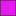

<!doctype html>
<html lang="en">
    <head>
        <meta charset="utf-8">
        <meta http-equiv="X-UA-Compatible" content="IE=edge">
        <meta name="viewport" content="initial-scale=1,user-scalable=no,maximum-scale=1,width=device-width">
        <meta name="mobile-web-app-capable" content="yes">
        <meta name="apple-mobile-web-app-capable" content="yes">
        <link rel="stylesheet" href="css/leaflet.css">
        <link rel="stylesheet" href="css/qgis2web.css"><link rel="stylesheet" href="css/fontawesome-all.min.css">
        <link rel="stylesheet" href="css/filter.css">
<link rel="stylesheet" href="css/nouislider.min.css">
        <style>
        #map {
            width: 943px;
            height: 540px;
        }
        </style>
        <title></title>
    </head>
    <body>
        <div id="map">
        </div>
        <script src="js/qgis2web_expressions.js"></script>
        <script src="js/leaflet.js"></script>
        <script src="js/leaflet.rotatedMarker.js"></script>
        <script src="js/leaflet.pattern.js"></script>
        <script src="js/leaflet-hash.js"></script>
        <script src="js/Autolinker.min.js"></script>
        <script src="js/rbush.min.js"></script>
        <script src="js/labelgun.min.js"></script>
        <script src="js/labels.js"></script>
        <script src="js/tailDT.js"></script>
<script src="js/nouislider.min.js"></script>
<script src="js/wNumb.js"></script>
        <script src="data/Zeme_2.js"></script>
        <script src="data/Pastatai_3.js"></script>
        <script src="data/Keliai_4.js"></script>
        <script type="text/javascript" src="https://cdnjs.cloudflare.com/ajax/libs/jquery/3.3.1/jquery.min.js"></script>
        <script>
        var highlightLayer;
        function highlightFeature(e) {
            highlightLayer = e.target;

            if (e.target.feature.geometry.type === 'LineString') {
              highlightLayer.setStyle({
                color: '#ffff00',
              });
            } else {
              highlightLayer.setStyle({
                fillColor: '#ffff00',
                fillOpacity: 1
              });
            }
            highlightLayer.openPopup();
        }
        var map = L.map('map', {
            zoomControl:true, maxZoom:28, minZoom:1
        }).fitBounds([[56.10500836585602,24.225244612722843],[56.125640948170286,24.261332456510434]]);
        var hash = new L.Hash(map);
        map.attributionControl.setPrefix('<a href="https://github.com/tomchadwin/qgis2web" target="_blank">qgis2web</a> &middot; <a href="https://leafletjs.com" title="A JS library for interactive maps">Leaflet</a> &middot; <a href="https://qgis.org">QGIS</a>');
        var autolinker = new Autolinker({truncate: {length: 30, location: 'smart'}});
        var bounds_group = new L.featureGroup([]);
        function setBounds() {
        }
        map.createPane('pane_OpenStreetMap_0');
        map.getPane('pane_OpenStreetMap_0').style.zIndex = 400;
        var layer_OpenStreetMap_0 = L.tileLayer('http://tile.osm.org/{z}/{x}/{y}.png', {
            pane: 'pane_OpenStreetMap_0',
            opacity: 1.0,
            attribution: '',
            minZoom: 1,
            maxZoom: 28,
            minNativeZoom: 0,
            maxNativeZoom: 19
        });
        layer_OpenStreetMap_0;
        map.addLayer(layer_OpenStreetMap_0);
        map.createPane('pane_GoogleSatelliteHybrid_1');
        map.getPane('pane_GoogleSatelliteHybrid_1').style.zIndex = 401;
        var layer_GoogleSatelliteHybrid_1 = L.tileLayer('https://mt1.google.com/vt/lyrs=y&x={x}&y={y}&z={z}', {
            pane: 'pane_GoogleSatelliteHybrid_1',
            opacity: 1.0,
            attribution: '',
            minZoom: 1,
            maxZoom: 28,
            minNativeZoom: 0,
            maxNativeZoom: 19
        });
        layer_GoogleSatelliteHybrid_1;
        map.addLayer(layer_GoogleSatelliteHybrid_1);
        function pop_Zeme_2(feature, layer) {
            layer.on({
                mouseout: function(e) {
                    for (i in e.target._eventParents) {
                        e.target._eventParents[i].resetStyle(e.target);
                    }
                    if (typeof layer.closePopup == 'function') {
                        layer.closePopup();
                    } else {
                        layer.eachLayer(function(feature){
                            feature.closePopup()
                        });
                    }
                },
                mouseover: highlightFeature,
            });
            var popupContent = '<table>\
                    <tr>\
                        <td colspan="2"><strong>Zemenauda</strong><br />' + (feature.properties['Zemenauda'] !== null ? autolinker.link(feature.properties['Zemenauda'].toLocaleString()) : '') + '</td>\
                    </tr>\
                    <tr>\
                        <td colspan="2"><strong>Potas</strong><br />' + (feature.properties['Potas'] !== null ? autolinker.link(feature.properties['Potas'].toLocaleString()) : '') + '</td>\
                    </tr>\
                </table>';
            layer.bindPopup(popupContent, {maxHeight: 400});
        }

        function style_Zeme_2_0(feature) {
            switch(String(feature.properties['Zemenauda'])) {
                case 'Dirbama žemė':
                    return {
                pane: 'pane_Zeme_2',
                opacity: 1,
                color: 'rgba(35,35,35,0.6)',
                dashArray: '',
                lineCap: 'butt',
                lineJoin: 'miter',
                weight: 1.0, 
                fill: true,
                fillOpacity: 1,
                fillColor: 'rgba(246,243,186,0.6)',
                interactive: true,
            }
                    break;
                case 'Gamybinės teritorijos':
                    return {
                pane: 'pane_Zeme_2',
                opacity: 1,
                color: 'rgba(35,35,35,0.6)',
                dashArray: '',
                lineCap: 'butt',
                lineJoin: 'miter',
                weight: 1.0, 
                fill: true,
                fillOpacity: 1,
                fillColor: 'rgba(226,48,48,0.6)',
                interactive: true,
            }
                    break;
                case 'Ganyklos arba pievos':
                    return {
                pane: 'pane_Zeme_2',
                opacity: 1,
                color: 'rgba(35,35,35,0.6)',
                dashArray: '',
                lineCap: 'butt',
                lineJoin: 'miter',
                weight: 1.0, 
                fill: true,
                fillOpacity: 1,
                fillColor: 'rgba(59,224,59,0.6)',
                interactive: true,
            }
                    break;
                case 'Kapinės':
                    return {
                pane: 'pane_Zeme_2',
                opacity: 1,
                color: 'rgba(35,35,35,0.6)',
                dashArray: '',
                lineCap: 'butt',
                lineJoin: 'miter',
                weight: 1.0, 
                fill: true,
                fillOpacity: 1,
                fillColor: 'rgba(236,209,53,0.6)',
                interactive: true,
            }
                    break;
                case 'Kūdros ir kiti nepratekančio vandens telkiniai':
                    return {
                pane: 'pane_Zeme_2',
                opacity: 1,
                color: 'rgba(35,35,35,0.6)',
                dashArray: '',
                lineCap: 'butt',
                lineJoin: 'miter',
                weight: 1.0, 
                fill: true,
                fillOpacity: 1,
                fillColor: 'rgba(109,238,234,0.6)',
                interactive: true,
            }
                    break;
                case 'Medžių, krūmų želdiniai ir žėliniai':
                    return {
                pane: 'pane_Zeme_2',
                opacity: 1,
                color: 'rgba(35,35,35,0.6)',
                dashArray: '',
                lineCap: 'butt',
                lineJoin: 'miter',
                weight: 1.0, 
                fill: true,
                fillOpacity: 1,
                fillColor: 'rgba(87,228,171,0.6)',
                interactive: true,
            }
                    break;
                case 'Miškas':
                    return {
                pane: 'pane_Zeme_2',
                opacity: 1,
                color: 'rgba(35,35,35,0.6)',
                dashArray: '',
                lineCap: 'butt',
                lineJoin: 'miter',
                weight: 1.0, 
                fill: true,
                fillOpacity: 1,
                fillColor: 'rgba(18,126,25,0.6)',
                interactive: true,
            }
                    break;
                case 'Nenaudojama žemė':
                    return {
                pane: 'pane_Zeme_2',
                opacity: 1,
                color: 'rgba(35,35,35,0.6)',
                dashArray: '',
                lineCap: 'butt',
                lineJoin: 'miter',
                weight: 1.0, 
                fill: true,
                fillOpacity: 1,
                fillColor: 'rgba(144,145,152,0.6)',
                interactive: true,
            }
                    break;
                case 'Sodai':
                    return {
                pane: 'pane_Zeme_2',
                opacity: 1,
                color: 'rgba(35,35,35,0.6)',
                dashArray: '',
                lineCap: 'butt',
                lineJoin: 'miter',
                weight: 1.0, 
                fill: true,
                fillOpacity: 1,
                fillColor: 'rgba(53,225,110,0.6)',
                interactive: true,
            }
                    break;
                case 'Stadionai ir sporto aikštynų kompleksai':
                    return {
                pane: 'pane_Zeme_2',
                opacity: 1,
                color: 'rgba(35,35,35,0.6)',
                dashArray: '',
                lineCap: 'butt',
                lineJoin: 'miter',
                weight: 1.0, 
                fill: true,
                fillOpacity: 1,
                fillColor: 'rgba(229,182,213,0.6)',
                interactive: true,
            }
                    break;
                case 'Upeliai, kanalai, drenažo grioviai':
                    return {
                pane: 'pane_Zeme_2',
                opacity: 1,
                color: 'rgba(35,35,35,0.6)',
                dashArray: '',
                lineCap: 'butt',
                lineJoin: 'miter',
                weight: 1.0, 
                fill: true,
                fillOpacity: 1,
                fillColor: 'rgba(35,48,232,0.6)',
                interactive: true,
            }
                    break;
                case 'Urbanizuotos teritorijos':
                    return {
                pane: 'pane_Zeme_2',
                opacity: 1,
                color: 'rgba(35,35,35,0.6)',
                dashArray: '',
                lineCap: 'butt',
                lineJoin: 'miter',
                weight: 1.0, 
                fill: true,
                fillOpacity: 1,
                fillColor: 'rgba(229,27,237,0.6)',
                interactive: true,
            }
                    break;
            }
        }
        map.createPane('pane_Zeme_2');
        map.getPane('pane_Zeme_2').style.zIndex = 402;
        map.getPane('pane_Zeme_2').style['mix-blend-mode'] = 'normal';
        var layer_Zeme_2 = new L.geoJson(json_Zeme_2, {
            attribution: '',
            interactive: true,
            dataVar: 'json_Zeme_2',
            layerName: 'layer_Zeme_2',
            pane: 'pane_Zeme_2',
            onEachFeature: pop_Zeme_2,
            style: style_Zeme_2_0,
        });
        bounds_group.addLayer(layer_Zeme_2);
        map.addLayer(layer_Zeme_2);
        function pop_Pastatai_3(feature, layer) {
            layer.on({
                mouseout: function(e) {
                    for (i in e.target._eventParents) {
                        e.target._eventParents[i].resetStyle(e.target);
                    }
                    if (typeof layer.closePopup == 'function') {
                        layer.closePopup();
                    } else {
                        layer.eachLayer(function(feature){
                            feature.closePopup()
                        });
                    }
                },
                mouseover: highlightFeature,
            });
            var popupContent = '<table>\
                    <tr>\
                        <td colspan="2"><strong>Tipas</strong><br />' + (feature.properties['Tipas'] !== null ? autolinker.link(feature.properties['Tipas'].toLocaleString()) : '') + '</td>\
                    </tr>\
                    <tr>\
                        <td colspan="2"><strong>Plotas</strong><br />' + (feature.properties['Plotas'] !== null ? autolinker.link(feature.properties['Plotas'].toLocaleString()) : '') + '</td>\
                    </tr>\
                </table>';
            layer.bindPopup(popupContent, {maxHeight: 400});
        }

        function style_Pastatai_3_0() {
            return {
                pane: 'pane_Pastatai_3',
                opacity: 1,
                color: 'rgba(128,62,0,1.0)',
                dashArray: '',
                lineCap: 'butt',
                lineJoin: 'miter',
                weight: 1.0, 
                fill: true,
                fillOpacity: 1,
                fillColor: 'rgba(255,127,0,1.0)',
                interactive: true,
            }
        }
        map.createPane('pane_Pastatai_3');
        map.getPane('pane_Pastatai_3').style.zIndex = 403;
        map.getPane('pane_Pastatai_3').style['mix-blend-mode'] = 'normal';
        var layer_Pastatai_3 = new L.geoJson(json_Pastatai_3, {
            attribution: '',
            interactive: true,
            dataVar: 'json_Pastatai_3',
            layerName: 'layer_Pastatai_3',
            pane: 'pane_Pastatai_3',
            onEachFeature: pop_Pastatai_3,
            style: style_Pastatai_3_0,
        });
        bounds_group.addLayer(layer_Pastatai_3);
        map.addLayer(layer_Pastatai_3);
        function pop_Keliai_4(feature, layer) {
            layer.on({
                mouseout: function(e) {
                    for (i in e.target._eventParents) {
                        e.target._eventParents[i].resetStyle(e.target);
                    }
                    if (typeof layer.closePopup == 'function') {
                        layer.closePopup();
                    } else {
                        layer.eachLayer(function(feature){
                            feature.closePopup()
                        });
                    }
                },
                mouseover: highlightFeature,
            });
            var popupContent = '<table>\
                    <tr>\
                        <td colspan="2"><strong>NUMERIS</strong><br />' + (feature.properties['NUMERIS'] !== null ? autolinker.link(feature.properties['NUMERIS'].toLocaleString()) : '') + '</td>\
                    </tr>\
                    <tr>\
                        <td colspan="2"><strong>VARDAS</strong><br />' + (feature.properties['VARDAS'] !== null ? autolinker.link(feature.properties['VARDAS'].toLocaleString()) : '') + '</td>\
                    </tr>\
                    <tr>\
                        <td colspan="2"><strong>DANGA</strong><br />' + (feature.properties['DANGA'] !== null ? autolinker.link(feature.properties['DANGA'].toLocaleString()) : '') + '</td>\
                    </tr>\
                    <tr>\
                        <td colspan="2"><strong>PLOTIS</strong><br />' + (feature.properties['PLOTIS'] !== null ? autolinker.link(feature.properties['PLOTIS'].toLocaleString()) : '') + '</td>\
                    </tr>\
                    <tr>\
                        <td colspan="2"><strong>Tipas</strong><br />' + (feature.properties['Tipas'] !== null ? autolinker.link(feature.properties['Tipas'].toLocaleString()) : '') + '</td>\
                    </tr>\
                </table>';
            layer.bindPopup(popupContent, {maxHeight: 400});
        }

        function style_Keliai_4_0(feature) {
            switch(String(feature.properties['Tipas'])) {
                case 'Gruntkelis, lauko-miško kelias':
                    return {
                pane: 'pane_Keliai_4',
                opacity: 1,
                color: 'rgba(81,80,79,1.0)',
                dashArray: '',
                lineCap: 'round',
                lineJoin: 'round',
                weight: 4.0,
                fillOpacity: 0,
                interactive: true,
            }
                    break;
                case 'Rajoninis kelias':
                    return {
                pane: 'pane_Keliai_4',
                opacity: 1,
                color: 'rgba(250,255,57,1.0)',
                dashArray: '',
                lineCap: 'square',
                lineJoin: 'bevel',
                weight: 4.0,
                fillOpacity: 0,
                interactive: true,
            }
                    break;
                case 'Vietinis kelias, gatvė':
                    return {
                pane: 'pane_Keliai_4',
                opacity: 1,
                color: 'rgba(205,130,9,1.0)',
                dashArray: '',
                lineCap: 'square',
                lineJoin: 'bevel',
                weight: 4.0,
                fillOpacity: 0,
                interactive: true,
            }
                    break;
            }
        }
        map.createPane('pane_Keliai_4');
        map.getPane('pane_Keliai_4').style.zIndex = 404;
        map.getPane('pane_Keliai_4').style['mix-blend-mode'] = 'normal';
        var layer_Keliai_4 = new L.geoJson(json_Keliai_4, {
            attribution: '',
            interactive: true,
            dataVar: 'json_Keliai_4',
            layerName: 'layer_Keliai_4',
            pane: 'pane_Keliai_4',
            onEachFeature: pop_Keliai_4,
            style: style_Keliai_4_0,
        });
        bounds_group.addLayer(layer_Keliai_4);
        map.addLayer(layer_Keliai_4);
        var baseMaps = {"Google Satellite Hybrid": layer_GoogleSatelliteHybrid_1,"OpenStreetMap": layer_OpenStreetMap_0,};
        L.control.layers(baseMaps,{'Keliai<br /><table><tr><td style="text-align: center;"></td><td>Gruntkelis, lauko-miško kelias</td></tr><tr><td style="text-align: center;"></td><td>Rajoninis kelias</td></tr><tr><td style="text-align: center;"></td><td>Vietinis kelias, gatvė</td></tr></table>': layer_Keliai_4,' Pastatai': layer_Pastatai_3,'Zeme<br /><table><tr><td style="text-align: center;"></td><td>Dirbama žemė</td></tr><tr><td style="text-align: center;"></td><td>Gamybinės teritorijos</td></tr><tr><td style="text-align: center;"></td><td>Ganyklos arba pievos</td></tr><tr><td style="text-align: center;"></td><td>Kapinės</td></tr><tr><td style="text-align: center;"></td><td>Kūdros ir kiti nepratekančio vandens telkiniai</td></tr><tr><td style="text-align: center;"></td><td>Medžių, krūmų želdiniai ir žėliniai</td></tr><tr><td style="text-align: center;"></td><td>Miškas</td></tr><tr><td style="text-align: center;"></td><td>Nenaudojama žemė</td></tr><tr><td style="text-align: center;"></td><td>Sodai</td></tr><tr><td style="text-align: center;"></td><td>Stadionai ir sporto aikštynų kompleksai</td></tr><tr><td style="text-align: center;"></td><td>Upeliai, kanalai, drenažo grioviai</td></tr><tr><td style="text-align: center;"></td><td>Urbanizuotos teritorijos</td></tr></table>': layer_Zeme_2,}).addTo(map);
        setBounds();
        var mapDiv = document.getElementById('map');
        var row = document.createElement('div');
        row.className="row";
        row.id="all";
        row.style.height = "100%";
        var col1 = document.createElement('div');
        col1.className="col9";
        col1.id = "mapWindow";
        col1.style.height = "99%";
        col1.style.width = "80%";
        col1.style.display = "inline-block";
        var col2 = document.createElement('div');
        col2.className="col3";
        col2.id = "menu";
        col2.style.display = "inline-block";
        mapDiv.parentNode.insertBefore(row, mapDiv);
        document.getElementById("all").appendChild(col1);
        document.getElementById("all").appendChild(col2);
        col1.appendChild(mapDiv)
        var Filters = {"Plotas": "real","Zemenauda": "str"};
        function filterFunc() {
          map.eachLayer(function(lyr){
          if ("options" in lyr && "dataVar" in lyr["options"]){
            features = this[lyr["options"]["dataVar"]].features.slice(0);
            try{
              for (key in Filters){
                keyS = key.replace(/[^a-zA-Z0-9_]/g, "")
                if (Filters[key] == "str" || Filters[key] == "bool"){
                  var selection = [];
                  var options = document.getElementById("sel_" + keyS).options
                  for (var i=0; i < options.length; i++) {
                    if (options[i].selected) selection.push(options[i].value);
                  }
                    try{
                      if (key in features[0].properties){
                        for (i = features.length - 1;
                          i >= 0; --i){
                          if (selection.indexOf(
                          features[i].properties[key])<0
                          && selection.length>0) {
                          features.splice(i,1);
                          }
                        }
                      }
                    } catch(err){
                  }
                }
                if (Filters[key] == "int"){
                  sliderVals =  document.getElementById(
                    "div_" + keyS).noUiSlider.get();
                  try{
                    if (key in features[0].properties){
                    for (i = features.length - 1; i >= 0; --i){
                      if (parseInt(features[i].properties[key])
                          < sliderVals[0]
                          || parseInt(features[i].properties[key])
                          > sliderVals[1]){
                            features.splice(i,1);
                          }
                        }
                      }
                    } catch(err){
                    }
                  }
                if (Filters[key] == "real"){
                  sliderVals =  document.getElementById(
                    "div_" + keyS).noUiSlider.get();
                  try{
                    if (key in features[0].properties){
                    for (i = features.length - 1; i >= 0; --i){
                      if (features[i].properties[key]
                          < sliderVals[0]
                          || features[i].properties[key]
                          > sliderVals[1]){
                            features.splice(i,1);
                          }
                        }
                      }
                    } catch(err){
                    }
                  }
                if (Filters[key] == "date"
                  || Filters[key] == "datetime"
                  || Filters[key] == "time"){
                  try{
                    if (key in features[0].properties){
                      HTMLkey = key.replace(/[&\/\\#,+()$~%.'":*?<>{} ]/g, '');
                      startdate = document.getElementById("dat_" +
                        HTMLkey + "_date1").value.replace(" ", "T");
                      enddate = document.getElementById("dat_" +
                        HTMLkey + "_date2").value.replace(" ", "T");
                      for (i = features.length - 1; i >= 0; --i){
                        if (features[i].properties[key] < startdate
                          || features[i].properties[key] > enddate){
                          features.splice(i,1);
                        }
                      }
                    }
                  } catch(err){
                  }
                }
              }
            } catch(err){
            }
          this[lyr["options"]["layerName"]].clearLayers();
          this[lyr["options"]["layerName"]].addData(features);
          }
          })
        }
            document.getElementById("menu").appendChild(
                document.createElement("div"));
            var div_Plotas = document.createElement("div");
            div_Plotas.id = "div_Plotas";
            div_Plotas.className = "slider";
            document.getElementById("menu").appendChild(div_Plotas);
            var lab_Plotas = document.createElement('div');
            lab_Plotas.innerHTML  = 'Plotas: <span id="val_Plotas"></span>';
            lab_Plotas.className = 'filterlabel';
            document.getElementById("menu").appendChild(lab_Plotas);
            var reset_Plotas = document.createElement('div');
            reset_Plotas.innerHTML = 'clear filter';
            reset_Plotas.className = 'filterlabel';
            lab_Plotas.className = 'filterlabel';
            reset_Plotas.onclick = function() {
                sel_Plotas.noUiSlider.reset();
            };
            document.getElementById("menu").appendChild(reset_Plotas);
            var sel_Plotas = document.getElementById('div_Plotas');
            noUiSlider.create(sel_Plotas, {
                connect: true,
                start: [12.515, 947.949],
                range: {
                min: 12.515,
                max: 947.949
                }
            });
            sel_Plotas.noUiSlider.on('update', function (values) {
            val_Plotas = document.getElementById('val_Plotas');
            val_Plotas.innerHTML = values.join(' - ');
                filterFunc()
            });
            document.getElementById("menu").appendChild(
                document.createElement("div"));
            var div_Zemenauda = document.createElement('div');
            div_Zemenauda.id = "div_Zemenauda";
            div_Zemenauda.className= "filterselect";
            document.getElementById("menu").appendChild(div_Zemenauda);
            sel_Zemenauda = document.createElement('select');
            sel_Zemenauda.multiple = true;
            sel_Zemenauda.size = 10;
            sel_Zemenauda.id = "sel_Zemenauda";
            var Zemenauda_options_str = "<option value='' unselected></option>";
            sel_Zemenauda.onchange = function(){filterFunc()};
            Zemenauda_options_str  += '<option value="Dirbama žemė">Dirbama žemė</option>';
            Zemenauda_options_str  += '<option value="Gamybinės teritorijos">Gamybinės teritorijos</option>';
            Zemenauda_options_str  += '<option value="Ganyklos arba pievos">Ganyklos arba pievos</option>';
            Zemenauda_options_str  += '<option value="Kapinės">Kapinės</option>';
            Zemenauda_options_str  += '<option value="Kūdros ir kiti nepratekančio vandens telkiniai">Kūdros ir kiti nepratekančio vandens telkiniai</option>';
            Zemenauda_options_str  += '<option value="Medžių, krūmų želdiniai ir žėliniai">Medžių, krūmų želdiniai ir žėliniai</option>';
            Zemenauda_options_str  += '<option value="Miškas">Miškas</option>';
            Zemenauda_options_str  += '<option value="Nenaudojama žemė">Nenaudojama žemė</option>';
            Zemenauda_options_str  += '<option value="Sodai">Sodai</option>';
            Zemenauda_options_str  += '<option value="Stadionai ir sporto aikštynų kompleksai">Stadionai ir sporto aikštynų kompleksai</option>';
            Zemenauda_options_str  += '<option value="Upeliai, kanalai, drenažo grioviai">Upeliai, kanalai, drenažo grioviai</option>';
            Zemenauda_options_str  += '<option value="Urbanizuotos teritorijos">Urbanizuotos teritorijos</option>';
            sel_Zemenauda.innerHTML = Zemenauda_options_str;
            div_Zemenauda.appendChild(sel_Zemenauda);
            var lab_Zemenauda = document.createElement('div');
            lab_Zemenauda.innerHTML = 'Zemenauda';
            lab_Zemenauda.className = 'filterlabel';
            div_Zemenauda.appendChild(lab_Zemenauda);
            var reset_Zemenauda = document.createElement('div');
            reset_Zemenauda.innerHTML = 'clear filter';
            reset_Zemenauda.className = 'filterlabel';
            reset_Zemenauda.onclick = function() {
                var options = document.getElementById("sel_Zemenauda").options;
                for (var i=0; i < options.length; i++) {
                    options[i].selected = false;
                }
                filterFunc();
            };
            div_Zemenauda.appendChild(reset_Zemenauda);

        
        var popup = L.popup();

        //popup function
        function onMapClick(e) {
            popup
                .setLatLng(e.latlng)
                .setContent("You clicked the map at " + e.latlng.toString()) //esample from leaflet, will be immediately replaced by weatherpopup...
                .openOn(map);


                //getting json function
                $(document).ready(function(){
                $.ajax({
                    url: "https://api.openweathermap.org/data/2.5/weather?lat=" + e.latlng.lat + '&lon=' + e.latlng.lng + "&appid=cc7616bddf096c0f7e2f9f96b4e331be",
                    dataType: 'json',
                    success: function(data) {
                    // storing json data in variables
                        weatherlocation_lon = data.coord.lon; // lon WGS84
                        weatherlocation_lat = data.coord.lat; // lat WGS84
                        weatherstationname = data.name // Name of Weatherstation
                        weatherstationid = data.id // ID of Weatherstation
                        weathertime = data.dt // Time of weatherdata (UTC)
                        temperature = data.main.temp; // Kelvin
                        airpressure = data.main.pressure; // hPa
                        airhumidity = data.main.humidity; // %
                        temperature_min = data.main.temp_min; // Kelvin
                        temperature_max = data.main.temp_max; // Kelvin
                        windspeed = data.wind.speed; // Meter per second
                        winddirection = data.wind.deg; // Wind from direction x degree from north
                        cloudcoverage = data.clouds.all; // Cloudcoverage in %
                        weatherconditionid = data.weather[0].id // ID
                        weatherconditionstring = data.weather[0].main // Weatheartype
                        weatherconditiondescription = data.weather[0].description // Weatherdescription
                        weatherconditionicon = data.weather[0].icon // ID of weathericon

                        // Converting Unix UTC Time
                        var utctimecalc = new Date(weathertime * 1000);
                        var months = ['01','02','03','04','05','06','07','08','09','10','11','12'];
                        var year = utctimecalc.getFullYear();
                        var month = months[utctimecalc.getMonth()];
                        var date = utctimecalc.getDate();
                        var hour = utctimecalc.getHours();
                        var min = utctimecalc.getMinutes();
                        var sec = utctimecalc.getSeconds();
                        var time = date + '.' + month + '.' + year + ' ' + hour + ':' + min + ' Uhr';

                        // recalculating
                        var weathercondtioniconhtml = "http://openweathermap.org/img/w/" + weatherconditionicon + ".png";
                        var weathertimenormal = time; // reallocate time var....
                        var temperaturecelsius = Math.round((temperature - 273) * 100) / 100;  // Converting Kelvin to Celsius
                        var windspeedknots = Math.round((windspeed * 1.94) * 100) / 100; // Windspeed from m/s in Knots; Round to 2 decimals
                        var windspeedkmh = Math.round((windspeed * 3.6) * 100) / 100; // Windspeed from m/s in km/h; Round to 2 decimals
                        var winddirectionstring = "Im the wind from direction"; // Wind from direction x as text
                        if (winddirection > 348.75 &&  winddirection <= 11.25) {
                            winddirectionstring =  "North";
                        } else if (winddirection > 11.25 &&  winddirection <= 33.75) {
                            winddirectionstring =  "Northnortheast";
                        } else if (winddirection > 33.75 &&  winddirection <= 56.25) {
                            winddirectionstring =  "Northeast";
                        } else if (winddirection > 56.25 &&  winddirection <= 78.75) {
                            winddirectionstring =  "Eastnortheast";
                        } else if (winddirection > 78.75 &&  winddirection <= 101.25) {
                            winddirectionstring =  "East";
                        } else if (winddirection > 101.25 &&  winddirection <= 123.75) {
                            winddirectionstring =  "Eastsoutheast";
                        } else if (winddirection > 123.75 &&  winddirection <= 146.25) {
                            winddirectionstring =  "Southeast";
                        } else if (winddirection > 146.25 &&  winddirection <= 168.75) {
                            winddirectionstring =  "Southsoutheast";
                        } else if (winddirection > 168.75 &&  winddirection <= 191.25) {
                            winddirectionstring =  "South";
                        } else if (winddirection > 191.25 &&  winddirection <= 213.75) {
                            winddirectionstring =  "Southsouthwest";
                        } else if (winddirection > 213.75 &&  winddirection <= 236.25) {
                            winddirectionstring =  "Southwest";
                        } else if (winddirection > 236.25 &&  winddirection <= 258.75) {
                            winddirectionstring =  "Westsouthwest";
                        } else if (winddirection > 258.75 &&  winddirection <= 281.25) {
                            winddirectionstring =  "West";
                        } else if (winddirection > 281.25 &&  winddirection <= 303.75) {
                            winddirectionstring =  "Westnorthwest";
                        } else if (winddirection > 303.75 &&  winddirection <= 326.25) {
                            winddirectionstring =  "Northwest";
                        } else if (winddirection > 326.25 &&  winddirection <= 348.75) {
                            winddirectionstring =  "Northnorthwest";
                        } else {
                            winddirectionstring =  " - currently no winddata available - ";
                        };

                    //Popup with content
                        var fontsizesmall = 1;
                        popup.setContent("Weatherdata:<br>" + "<br>" + weatherconditionstring + " (Weather-ID: " + weatherconditionid + "): " + weatherconditiondescription + "<br><br>Temperature: " + temperaturecelsius + "°C<br>Airpressure: " + airpressure + " hPa<br>Humidityt: " + airhumidity + "%" + "<br>Cloudcoverage: " + cloudcoverage + "%<br><br>Windspeed: " + windspeedkmh + " km/h<br>Wind from direction: " + winddirectionstring + " (" + winddirection + "°)" + "<br><br><font size=" + fontsizesmall + ">Datasource:<br>openweathermap.org<br>Measure time: " + weathertimenormal + "<br>Weatherstation: " + weatherstationname + "<br>Weatherstation-ID: " + weatherstationid + "<br>Weatherstation Coordinates: " + weatherlocation_lon + ", " + weatherlocation_lat);           


                    },
                    error: function() {
                        alert("error receiving wind data from openweathermap");
                    }
                });        
                });
                //getting json function ends here

            //popupfunction ends here
            }

            //popup
            map.on('click', onMapClick); 
        </script>
    </body>
</html>
